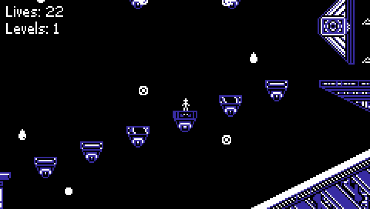

Endless Mod for LOVE 3

Install
Download (Windows): https://www.python-b5.com/endless-mod/endless-mod.zip
Instructions
Extract the .zip file to your base LOVE 3 install directory and run install.bat. The original data.win file will be saved as vanilla.win, to allow for easy uninstallation (just delete data.win and rename the backup file).
NOTE: This is only tested on the Steam version of the game, as I don't own the itch version. Additionally, other platforms may be supported in the future, but I don't have easy access to them, so it likely won't happen anytime soon.
Features
-
Adds Endless Mode to the game (based on the version in LOVE 2: kuso)
- Flips levels if needed to match up level exits (and tries its best for the levels that enter/exit vertically)
- Choose which levelsets to include in the rotation (NOTE: <3 has level 20 removed, as it's barely a level and the fade transition is awkward in the middle of a run)
- Counts all found secrets and resets them after each level is completed
- Save and load support (NOTE: Vanilla saves are not compatible with this mod and will crash the game; delete
save.savbefore playing!)
-
Bug fixes / polish (that I noticed while testing and were very easy to fix)
- Fixes not being able to pause when continuing any run after a game over
- Fixes broken
ifstatement in classic secret tokens (first one, for LOVE level 1; it sticks out once you notice it) - Fixes HUD text not being horizontally aligned with pause menu text
- Replaces all view restrictors in <3 with the spotlight type from level 10 (partially because I think they look better, but mostly because there was a bug with the other ones and I was lazy)